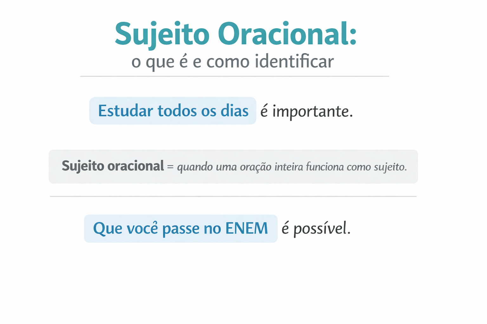

Sujeitos oracionais: o que são, tipos, exemplos e como identificar
Compreender quando uma oração inteira funciona como sujeito
Entender os sujeitos oracionais é essencial para interpretar corretamente frases mais complexas. Esse conteúdo aparece com frequência em provas de língua portuguesa, ENEM, vestibulares e concursos, principalmente em questões de sintaxe. Neste guia completo, você vai aprender o que são sujeitos oracionais, quando eles aparecem, quais são os tipos e como identificá-los com facilidade.

A seguir, você verá explicações claras, exemplos comentados e exercícios no nível ENEM para dominar de vez esse conteúdo.
O que é sujeito oracional?
Chamamos de sujeito oracional quando o sujeitoda oração não é uma palavra, mas sim uma oração inteira (ou seja, uma frase com verbo).
Exemplo:
Estudar todos os dias é importante.
Pergunta ao verbo: o que é importante?
Resposta: Estudar todos os dias → sujeito oracional.
O que é uma oração?
Antes de entender o sujeito oracional, é importante lembrar que oração é toda frase que possui verbo.
Exemplos:
Ele estudou muito.
Nós viajamos ontem.
Quero que você estude.
Na última frase existem duas orações:
- Quero
- Que você estude
Quando ocorre o sujeito oracional?
O sujeito oracional ocorre quando uma oração inteira exerce a função de sujeito da oração principal.
Exemplo:
Estudar para o ENEM é fundamental.
Verbo principal: é
Pergunta: o que é fundamental?
Resposta: Estudar para o ENEM
Tipos de sujeitos oracionais
1. Oração reduzida como sujeito
Ocorre quando o sujeito aparece com verbo no infinitivo.
Exemplos:
Estudar todos os dias ajuda muito.
Dormir cedo melhora o rendimento.
Treinar redação toda semana faz diferença.
2. Oração desenvolvida como sujeito
Ocorre quando o sujeito começa geralmente com a palavra que.
Exemplos:
Que você passe no ENEM é possível.
Que os alunos estudem mais é necessário.
Que a educação melhore no Brasil é urgente.
Como identificar o sujeito oracional?
Siga este passo a passo simples:
1. Encontre o verbo principal
Ex.: Estudar matemática é importante.
2. Pergunte ao verbo: o que?
O que é importante?
Resposta: Estudar matemática → sujeito oracional
Exemplos explicados
1. Estudar para o ENEM exige disciplina.
Pergunta: o que exige disciplina?
Resposta: Estudar para o ENEM → sujeito oracional
2. Que você passe na faculdade é possível.
Pergunta: o que é possível?
Resposta: Que você passe na faculdade → sujeito oracional
3. Dormir bem melhora a memória.
Pergunta: o que melhora a memória?
Resposta: Dormir bem → sujeito oracional
Diferença entre sujeito simples e sujeito oracional
| Frase | Tipo de sujeito |
|---|---|
| João estuda todos os dias | Sujeito simples |
| A professora explicou a matéria | Sujeito simples |
| Estudar todos os dias é essencial | Sujeito oracional |
| Que você aprenda português é importante | Sujeito oracional |
Dica rápida para nunca errar
- Se a resposta da pergunta “o que?” for uma frase com verbo → é sujeito oracional.
- Se a resposta for apenas uma palavra → é sujeito simples.
Exercícios sobre sujeitos oracionais
Identifique o sujeito oracional nas frases abaixo:
1. Estudar matemática melhora o raciocínio.
2. Que você consiga uma boa nota é possível.
3. Dormir cedo ajuda na concentração.
4. Que a educação brasileira melhore é necessário.
Resumo rápido
- Sujeito oracional = quando uma oração inteira funciona como sujeito.
- Pode aparecer com verbo no infinitivo (oração reduzida).
- Pode aparecer com a palavra “que” (oração desenvolvida).
- Para identificar, basta perguntar ao verbo: o que?
Quiz — Sujeito Oracional (nível ENEM e vestibulares)
Questão 1 — Identifique o sujeito oracional:
“Estudar todos os dias é importante.”
Questão 2 — Classifique o sujeito:
“Que você passe no ENEM é possível.”
Questão 3 — Identifique o sujeito oracional:
“Dormir bem melhora a memória.”
Questão 4 — Qual frase possui sujeito oracional?
Explore Outros Conteúdos
Continue seus estudos acessando outras seções do site Mestre Kira: